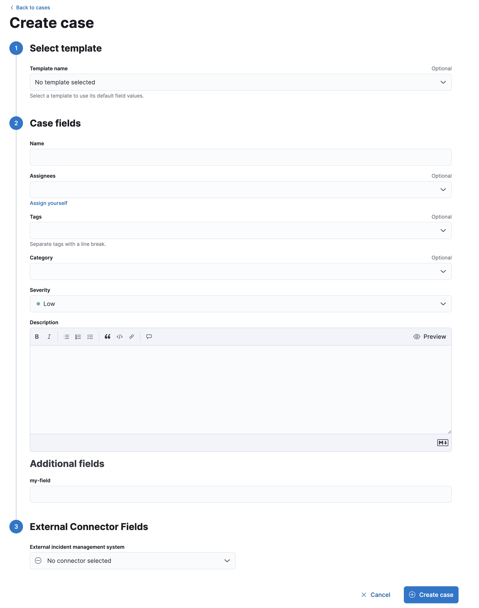
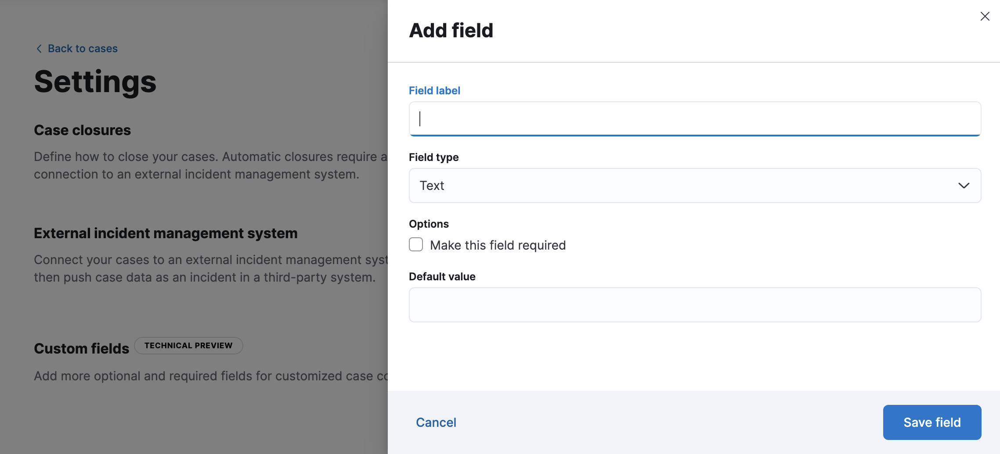

Open and manage casesedit
Open a new caseedit
Open a new case to keep track of issues and share their details with colleagues.
-
Go to Management > Stack Management > Cases, then click Create case.
 -
Give the case a name, severity, and description.
In the
Descriptionarea, you can use Markdown syntax to create formatted text. - Optionally, add a category, assignees, and tags. You can add users only if they meet the necessary prerequisites.
- [preview] This functionality is in technical preview and may be changed or removed in a future release. Elastic will work to fix any issues, but features in technical preview are not subject to the support SLA of official GA features. If you defined any custom fields, they appear in the Additional fields section. Check out Add custom fields.
- For the External incident management system, select a connector. For more information, refer to Add connectors.
- After you’ve completed all of the required fields, click Create case.
[preview] This functionality is in technical preview and may be changed or removed in a future release. Elastic will work to fix any issues, but features in technical preview are not subject to the support SLA of official GA features. Alternatively, you can configure your rules to automatically create cases by using case actions. By default, the rule adds all of the alerts within a specified time window to a single case. You can optionally choose a field to group the alerts and create separate cases for each group. You can also choose whether you want the rule to reopen cases or open new ones when the time window elapses.
Add custom fieldsedit
This functionality is in technical preview and may be changed or removed in a future release. Elastic will work to fix any issues, but features in technical preview are not subject to the support SLA of official GA features.
You can add optional and required fields for customized case collaboration.
-
Go to Stack Management > Cases and click Settings.

To view and change case settings, you must have the appropriate Kibana feature privileges. Refer to Configure access to cases.
-
In the Custom fields section, click Add field.
 - Enter a field label.
- Choose a field type: text or toggle.
- If you want the text field to be mandatory in all cases, select Make this field required.
- Optionally add a default value.
- Click Save field.
You can subsequently remove or edit custom fields on the Settings page.
After you create custom fields, they’re added to all new and existing cases.
Existing cases have null values for the new text fields until you set them in each case.
For example, you must click the pencil icon next to my-field to set it:

Add email notificationsedit
You can configure email notifications that occur when users are assigned to cases.
For hosted Kibana on Elasticsearch Service:
-
Add the email domains to the notifications domain allowlist.
You do not need to take any more steps to configure an email connector or update Kibana user settings, since the preconfigured Elastic-Cloud-SMTP connector is used by default.
For self-managed Kibana:
-
Create a preconfigured email connector.
At this time, email notifications support only preconfigured connectors, which are defined in the
kibana.ymlfile. For examples, refer to Email connectors and Configure email accounts for well-known services. -
Set the
notifications.connectors.default.emailKibana setting to the name of your email connector. - If you want the email notifications to contain links back to the case, you must configure the server.publicBaseUrl setting.
When you subsequently add assignees to cases, they receive an email.
Add filesedit
After you create a case, you can upload and manage files on the Files tab:
The acceptable file types and sizes are affected by your case settings.
To download or delete the file or copy the file hash to your clipboard, open the action menu (…). The available hash functions are MD5, SHA-1, and SHA-256.
When you upload a file, a comment is added to the case activity log. To view images, click their name in the activity or file list.
Uploaded files are also accessible in Stack Management > Files. When you export cases as saved objects, the case files are not exported.
Add visualizationsedit
You can also optionally add visualizations. For example, you can portray event and alert data through charts and graphs.
To add a visualization to a comment within your case:
- Click the Visualization button. The Add visualization dialog appears.
-
Select an existing visualization from your Visualize Library or create a new visualization.
Set an absolute time range for your visualization. This ensures your visualization doesn’t change over time after you save it to your case and provides important context for viewers.
- After you’ve finished creating your visualization, click Save and return to go back to your case.
- Click Preview to see how the visualization will appear in the case comment.
- Click Add Comment to add the visualization to your case.
Alternatively, while viewing a dashboard you can open a panel’s menu then click More > Add to existing case or More > Add to new case.
After a visualization has been added to a case, you can modify or interact with it by clicking the Open Visualization option in the case’s comment menu.
Manage casesedit
In Management > Stack Management > Cases, you can search cases and filter them by attributes such as assignees, categories, severity, status, and tags. You can also select multiple cases and use bulk actions to delete cases or change their attributes.
To view a case, click on its name. You can then:
- Add a new comment.
- Edit existing comments and the description.
- Add or remove assignees.
- Add a connector.
- Send updates to external systems (if external connections are configured).
- Edit the category and tags.
- Refresh the case to retrieve the latest updates.
- Change the status.
- Change the severity.
- Close or delete the case.
- Reopen a closed case.